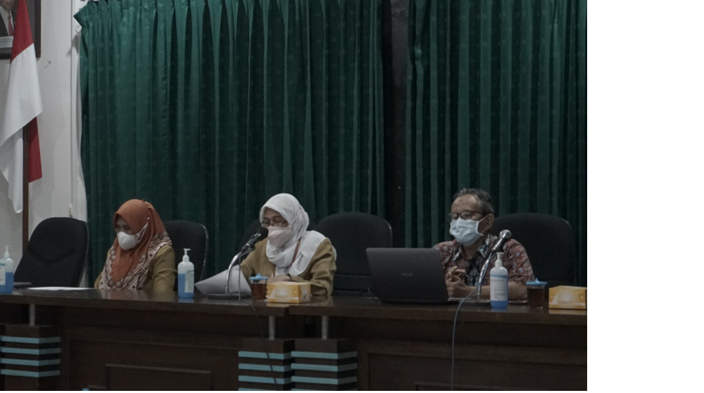
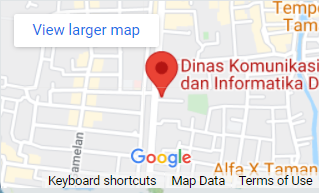

| Beranda | Profil | Program & Kegiatan | Informasi | Berita | Galeri | Layanan | Kontak |


Berita Terbaru
Rakor E-Lapor Pemda DIY "Fast Respond, Fast Solution, Trusted Complain Handling System"
Dinas Komunikasi dan Informatika menyelenggarakan Rapat Koordinasi E-Lapor DIY pada Hari Senin, 7 Februari 2022 di Ruang Aula Kresna Dinas Kominfo DIY. Acara ini dihadiri oleh Admin E-Lapor OPD Pemda DIY yaitu 20 OPD secara luring dan 19 OPD secara daring dengan protokol kesehatan yang ketat. Hadir sebagai narasumber Local Coordinator SP4N Lapor DIY, Dr. Idham Ibty yang memaparkan materi tentang Konsistensi Penanganan Aduan E-Lapor dan SP4N Lapor di OPD Pemda DIY.
Acara diawali dengan sambutan oleh Sekretaris Dinas Kominfo DIY, Ibu Dra. Meni Karyawati yang mewaliki Pelaksana Tugas Dinas Kominfo DIY. Beliau mengatakan bahwa berdasarkan data statistik aduan 2021, total aduan di E-Lapor DIY ada 1091 aduan dan seluruh aduan tersebut mendapatkan respon 100%. “Kami ucapkan terima kasih kepada OPD yang telah merespon aduan tersebut. Dan dari data tersebut masih terdapat keterlambatan sejumlah 226 aduan atau 20,71%. Kami mohon kepada OPD yang masih lambat dalam menangani aduan untuk berkomitmen merespon aduan dengan cepat supaya keluhan dari masyarakat dapat segera tertangani”, tutur Meni.
Acara dilanjutkan dengan pemaparan materi oleh Local Coordinator SP4N Lapor DIY, Dr. Idham Ibty. Beliau mengatakan bahwa Roadmap SP4N Lapor berdasarkan Permen PANRB No 46 Tahun 2020 adalah Mewujudkan Sistem Pengelolaan Pengaduan yang memiliki respon dan solusi cepat, serta terpercaya atau fast respond, fast solution, trusted complain handling system. “Target implementasi Roadmap SP4N Lapor adalah menjadi dasar dalam pengambilan keputusan dan kebijakan pemerintah dalam peningkatan pelayanan publik. Selain itu juga dapat menjadi proyeksi perencanaan pembangunan khususnya dalam peningkatan pelayanan publik serta penyelenggaraan pemerintah”, jelas Idham. “Arti penting pengelolaan aduan adalah hak masyarakat, evaluasi pelayanan publik, dan kesempatan klarifikasi”, tambah Idham.
| Jogja Istimewa TV |
Peta
 |
Alamat: Jl. Brigjen Katamso Komplek THR Yogyakarta Indonesia |
Pengunjung113239 |